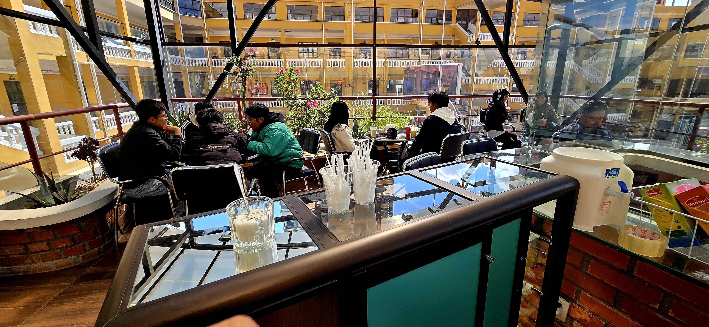

Excursiones y entretenimiento
Elige un destino para ver la ruta desde la Plaza del Estudiante, La Paz.

Noche de coctelería
Relájate y disfruta de una noche especial.
Ubicación del bar pendiente de confirmar.
Elige un destino para ver la ruta desde la Plaza del Estudiante, La Paz.

Relájate y disfruta de una noche especial.
Ubicación del bar pendiente de confirmar.